Retest round 19 — full review
All writes were read back from Plane: 40 in Done, comment and annotated images present on every posted ticket. Not counted above: round 18 carry-overs NDC-3015 → Done (your A) and NDC-3018 → Bug (your B), posted this morning.
1 · Needs your decision or action
NDC-3000 YOUR ACTION Email | Customers get no acknowledgement emails; closed email has no rating link
Evidence
NDC-2850 YOUR ACTION SLA | Removing an agent drops them from SLA escalations instead of handing them over
Evidence
NDC-2870 YOUR DECISION Global Sets: features Zoho CRM has that CRM is missing (gap list, 11 items)
Evidence
New findings not filed yet: file them?
| Sev | Proposed title | Found in | Note |
|---|---|---|---|
| High | Global Sets | Delete icon and "Where is this value used" on an Unused value crash the page | NDC-2870 item 2 | API works (used 422, unused 200). Not drafted yet. |
| Medium | Global Sets | Used In never lists the reports that use the set | NDC-2870 item 7 | API field-usage finds them (response body wrapped twice). Not drafted. |
| Medium | Global Sets | List views and reports ignore the saved "Entered order" sort | NDC-2870 item 3 | Entered Silver, Platinum, Bronze → shown Bronze, Platinum, Silver; Zoho keeps entered order. Not drafted. |
| Low | Global Sets | Used In column shows a field count, not module names / report count | NDC-2870 item 9 | Not drafted. |
| ? | Agents API | POST /desk/agents/{id}/reassign removes the agent from every department, team and RR pool, also ones not in the request | NDC-2850 item 6 | The screen always sends every department, so users do not hit it. API-only. Restored. File it or not? |
| ? | Email | One acknowledgement logged as "sent" twice (#4745) | NDC-3000 | Depends on your inbox count (above). |
Housekeeping for you to approve
- Cleanup of round 18 and round 19 test data, done once after your OK: 916 ledger lines (QA RT19 AS / WF / SK / SLA / NTF / BUG / GS / D3 / HC records, departments, rules, blueprints, SLA policies, skills, contacts, tickets), the r18 Leads list back to Kanban, and the saved sign-in files. It also stops the session keeper.
- Zoho CRM test org leftover: private view "QA RT19 GS Zsort view" cannot be deleted by API (400). I will delete it from the Zoho screen during cleanup. The set "QA RT19 GS Zsort" delete is scheduled by Zoho. Zoho Desk (techegysolutions) is already at zero.
- Plane API key CSV expires 1 Dec 2026. Delete it in Plane and in Downloads when we are done.
2 · Failed or partial → moved to Bug (5)
NDC-2275 PARTIAL Assignment Rules: Direct Assignment and Round Robin (requirements)
What was checked + evidence
NDC-2997 FAIL Workflow Rules | Owner Assignment by role (round robin) never assigns anyone
What was checked + evidence
NDC-3007 PARTIAL Community | A customer's question topic does not create a linked ticket
What was checked + evidence
NDC-2933 PARTIAL Skills | Ticket Skills field offers and keeps inactive skills and other departments' skills; Zoho drops them and has no Skills on Add Ticket
What was checked + evidence
NDC-2841 PARTIAL SLA | A contract in one department can use a support plan (and its SLA) from another department
What was checked + evidence
3 · Skipped / not changed
NDC-3056 PARTIAL Blueprint | Agents cannot see the blueprint's flow and transition conditions from a ticket
Evidence
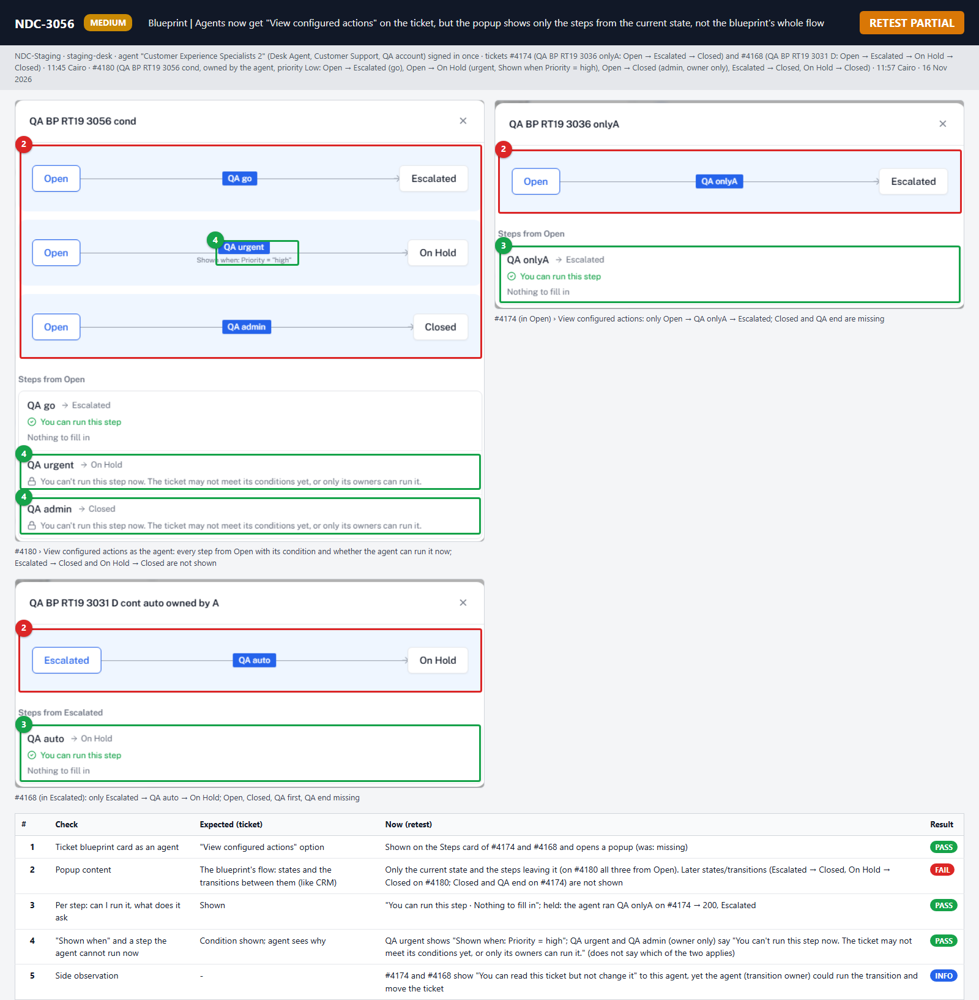
Blocked: none. Every ticket in scope was tested. Runs made during the staging outage (12:30–12:40Z, Desk 500/503, owner session revoked) were thrown away and redone.
4 · Passed → moved to Done (40)
Blueprint (10)
| Ticket | Title | Rd | What proved it | Evidence |
|---|---|---|---|---|
| NDC-3061 PASS | Blueprint | The "Send notification" after-transition action is never sent, while the transition's other after-actions run | 19b | Run Move to On Hold on #4689 → On Hold; Description set by the blueprint [PASS] Recipients' Desk bell → Owner…Run Move to On Hold on #4689 → On Hold; Description set by the blueprint [PASS] Recipients' Desk bell → Owner and Mahmoud Samy: "QA RT19 NTF 3061 moved to On Hold …" at 13:12:16Z, app desk [PASS] Third recipient Test User 1 → Not checked (no session) [INFO] | 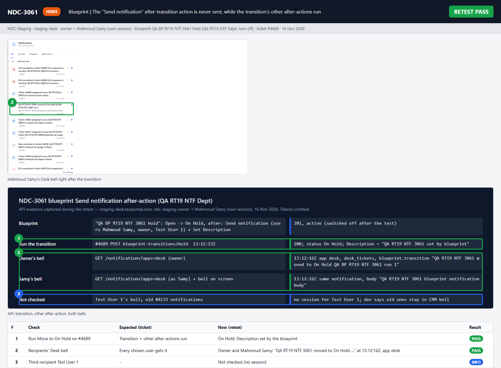 |
| NDC-3029 PASS | Blueprint | Creating, editing, publishing or deleting a blueprint leaves no entry in the Audit Log | 19 | Create blueprint → "ndc-staging-owner added a Blueprint named QA BP RT19 3029 audit" + Department: Customer Su…Create blueprint → "ndc-staging-owner added a Blueprint named QA BP RT19 3029 audit" + Department: Customer Support (was: nothing) [PASS] Edit description, Save and Publish → "… updated QA BP RT19 3029 audit: changed the description" and "… published a Blueprint named …" [PASS] Change who can run transition QA finish, publish → "… changed who can perform the transition QA finish" + second "published" line [PASS] Activate, then deactivate → "… Active from no to yes" and "… Active from yes to no" (worded as updates, not "activated") [PASS] Delete blueprint → "… deleted a Blueprint named QA BP RT19 3029 audit"; GET /audit/events?app_key=desk returns all 9 rows (target blueprint_definition_row, metadata department_name Customer Support) [PASS] IP shown on these lines → ::ffff:172.19.0.19/128 (an internal server address) on every change line, ticket edits too; sign-in lines show the real public IP. Not blueprint-specific, reported separately [INFO] | 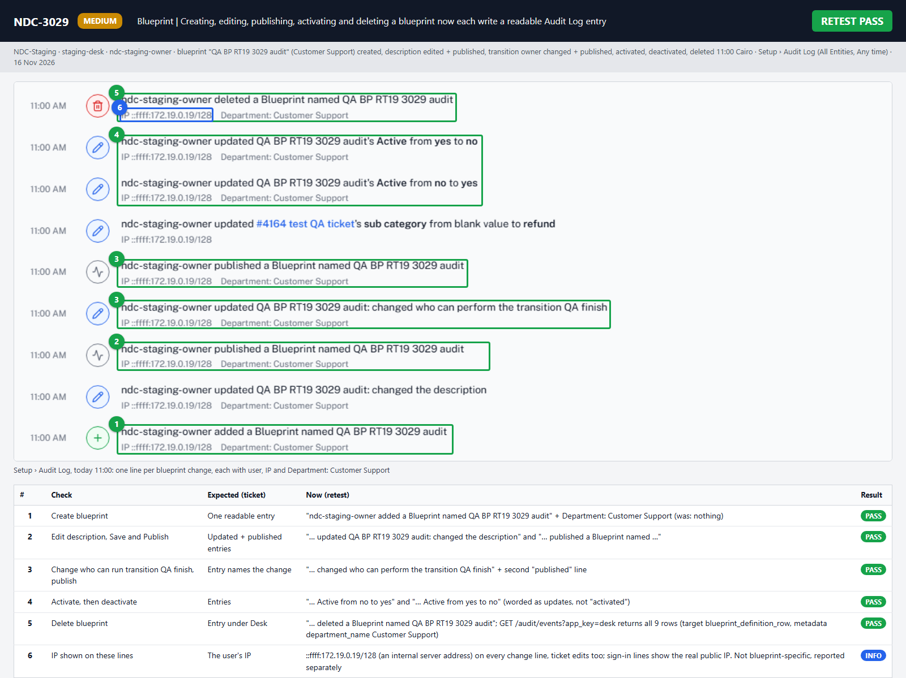 |
| NDC-3030 PASS | Blueprint | Two people editing the same blueprint: the second save silently replaces the first person's change | 19 | Tab 2 saves from the old copy → Banner "Someone else changed this blueprint after you opened it." with Reload …Tab 2 saves from the old copy → Banner "Someone else changed this blueprint after you opened it." with Reload / Keep my changes; PUT /draft 409, no publish (was: saved as Version 2 silently) [PASS] Reload, then open the blueprint fresh → Name "QA BP RT19 3030 RENAMED IN TAB 1 run3" in tab 2 after Reload and on a fresh open; API revision 9 has that name. Reload asks first and says tab 2's own edits will be lost [PASS] API save from a stale copy (PUT and PUT /draft with old revision) → 409 BLUEPRINT_REVISION_CONFLICT with currentRevision; stored name unchanged [PASS] Dev: warning when you come back to a tab whose blueprint changed → Not seen in headless Edge (focus/visibility simulated); the banner came on Save instead. Keep my changes closes the banner and keeps the edits in the form [INFO] API save that sends no revision → 200 and overwrites (old name put back). The designer always sends a revision; only scripts/integrations that omit it can still overwrite [INFO] | 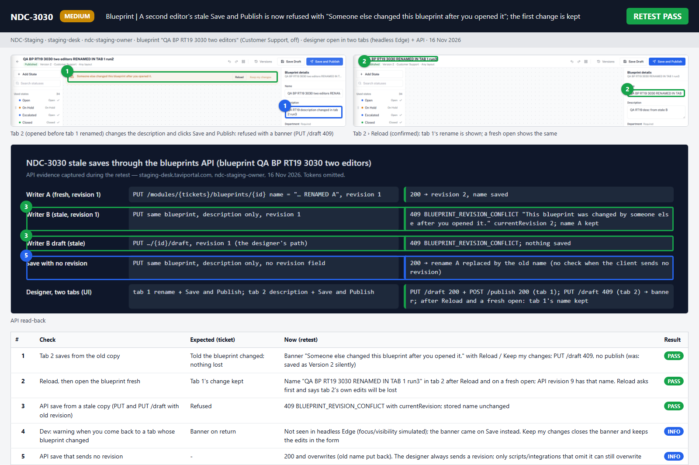 |
| NDC-3031 PASS | Blueprint | A continuous blueprint does not run the next step by itself | 19 | Continuous: run "first", wait → On Hold within 5 s (same at 30 s); History "Moved by … automatically · Transit…Continuous: run "first", wait → On Hold within 5 s (same at 30 s); History "Moved by … automatically · Transition QA auto · by System" (was: stuck in Escalated) [PASS] Dev: stops at a step that asks for something → "end" (checklist) not run; card shows Next step Closed [PASS] Ticket's shape (last step asks for nothing) → #4166 ran auto + end by itself → Closed, blueprint completed [PASS] Controls: not continuous / step owned by someone else → #4167 (not continuous) and #4168 (auto owned by agent A only) stay Escalated [PASS] History line of the automatic step → Shows From state Open, To state Escalated for QA auto (it moved Escalated → On Hold); the API row has no from/to. Reported as a new defect [INFO] | 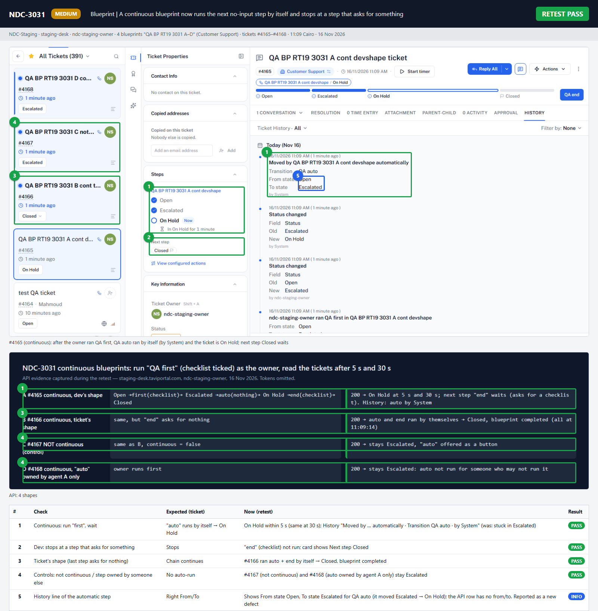 |
| NDC-3032 PASS | Blueprint | Field changes made by a blueprint are missing from the ticket's History tab | 19 | After action sets Description → "ndc-staging-owner updated the ticket through blueprint transition QA escalate…After action sets Description → "ndc-staging-owner updated the ticket through blueprint transition QA escalate in QA BP RT19 3032 fieldupd · Description: QA RT19 3032 fieldupd → QA RT19 set by blueprint" (was: missing) [PASS] After action sets Priority (pick list) → "… through blueprint transition QA escalate … · Priority: Low → High" [PASS] Transition line → "ndc-staging-owner ran QA escalate in … · From state Open · To state Escalated"; record read-back: description and priority changed, status Escalated [PASS] Address field changed by a blueprint → Not checked: Tickets has no address field on NDC-Staging (dev: covered by automated tests only) [INFO] | 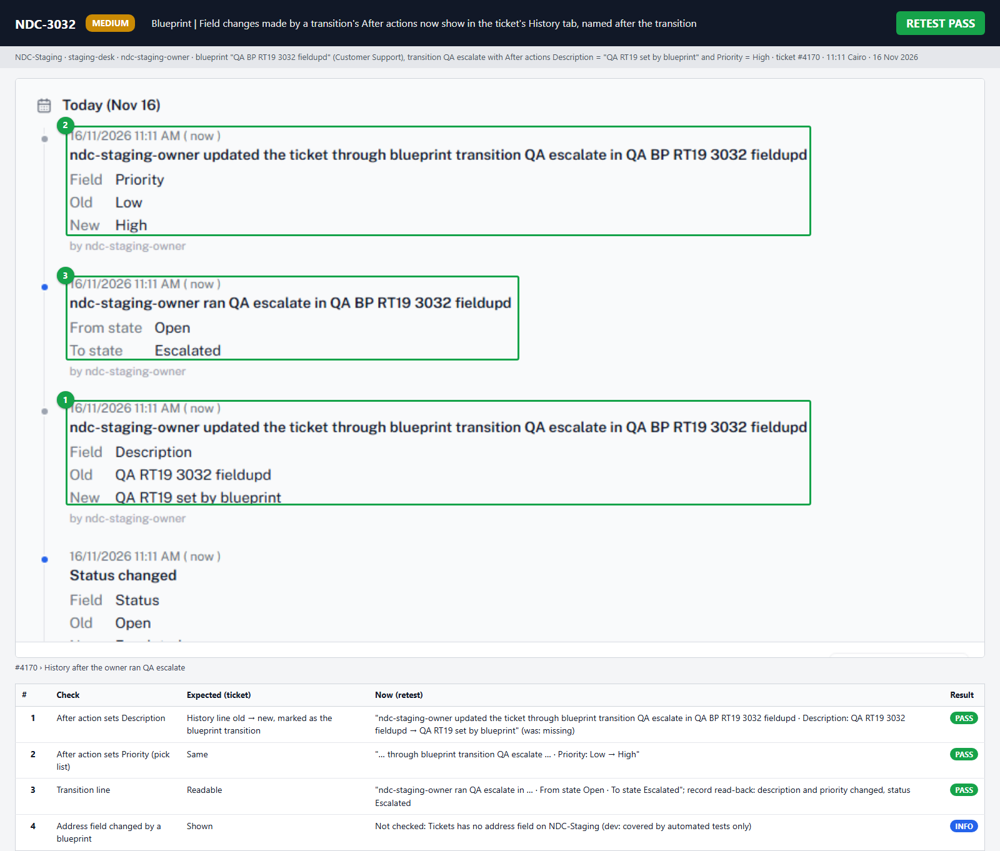 |
| NDC-3035 PASS | Blueprint | Unsaved designer changes are lost when the session expires | 19 | Unsaved description change, session expires, Save and Publish → "Your session expired. Please sign in again." …Unsaved description change, session expires, Save and Publish → "Your session expired. Please sign in again." (/login?reason=expired&returnTo=/settings/automation/blueprints/{id}); save refused 401, nothing saved [PASS] Sign in again → Return address is the same blueprint; banner "You have unsaved changes from 16/11/2026 11:14 AM. Restore / Discard" (was: old description, no warning) [PASS] Restore → Description = "QA RT19 3035 unsaved change 09:14:36" (typed before expiry); server copy still "QA RT19 desc from stale B" until saved [PASS] Dev: copies deleted on sign-out; hidden values not stored → Not checked: signing out the shared owner is not allowed in this run [INFO] | 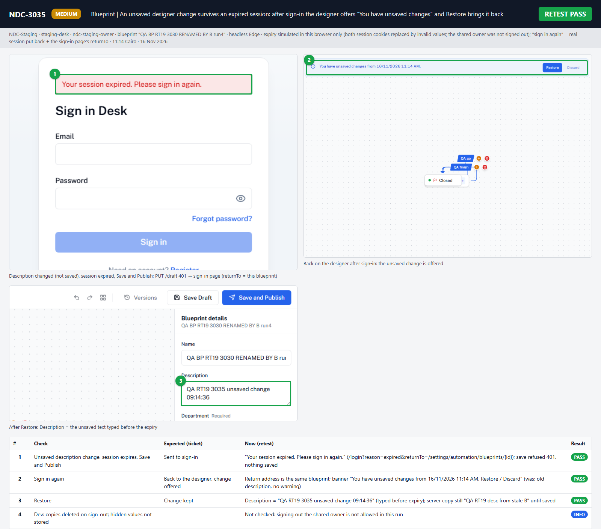 |
| NDC-3036 PASS | Blueprint | If the only owner of a transition is deactivated, nobody can run it and no warning is shown | 19 | Blueprint flags the transition → "1 warning, which does not block publishing · QA onlyA has no active owner. A…Blueprint flags the transition → "1 warning, which does not block publishing · QA onlyA has no active owner. Agents with edit access to the ticket can run this step until you choose an owner" on top and in Before (was: Active, no warning) [PASS] Suspended owner labelled → Who can run this: "Customer Experience Specialists 2 · Suspended · Agent" [PASS] Someone can still move the ticket → Button QA onlyA shown to the admin; API run 200, #4171 → Escalated (was: 403, "No transitions you can run") [PASS] Dev: while the only owner is active, the admin is refused → 403 BLUEPRINT_NOT_OWNER on #4171 before the suspension [PASS] After reactivation → For a few seconds the flag stayed and the admin could still run it (#4172, 200); from 11:21:06 the flag is gone and onlyA is not offered (#4174). Short cache, no lasting effect [INFO] | 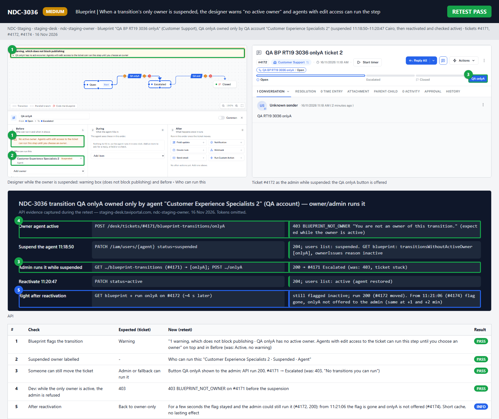 |
| NDC-3054 PASS | Blueprint | Closing a ticket through a blueprint transition sends no closed email or rating request | 19 | Close through a blueprint transition → "Ticket closed by blueprint transition QA close in QA BP RT19 3054 clos…Close through a blueprint transition → "Ticket closed by blueprint transition QA close in QA BP RT19 3054 close" (activity ticket.closed, reason blueprint_transition), once (was: only Status changed + Completed blueprint) [PASS] Closed email + rating request → Reply queued "Your ticket #4177 has been closed" → Reply sent 09:49:03Z; Happiness Link Status = sent (was: no email) [PASS] Normal close of #4178 (control) → ticket.closed, reply queued/sent "Your ticket #4178 has been closed", Happiness link sent — same result as #4177 [PASS] Emails in the user's inbox → "Your ticket #4177 has been closed" and "Your ticket #4178 has been closed" received 11:49 Cairo, each with "How would you rate your experience…" Bad / Okay / Good (checked by the user) [PASS] | 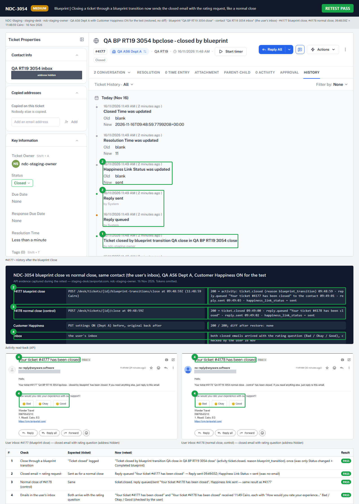 |
| NDC-3060 PASS | Blueprint | The Contact field in a transition form shows the contact's ID instead of the contact's name | 19b | Open the step on a ticket with a contact → "Mona QA RT18 Export" shown; 0 ids in page text or form HTML [PASS]…Open the step on a ticket with a contact → "Mona QA RT18 Export" shown; 0 ids in page text or form HTML [PASS] Account and Product in the same form (dev: same control) → "QA RT18 GL Account", "Laptop Stand"; each opens its own chooser [PASS] Click the Contact field → "Choose a record…" with search; free text not accepted [PASS] Pick another contact and Run → #4612 On Hold, contact_id changed to the picked contact; History logs it through the step [PASS] Arabic (dev claim) → Not checked: switching language on the shared owner session would disturb other lanes [INFO] | 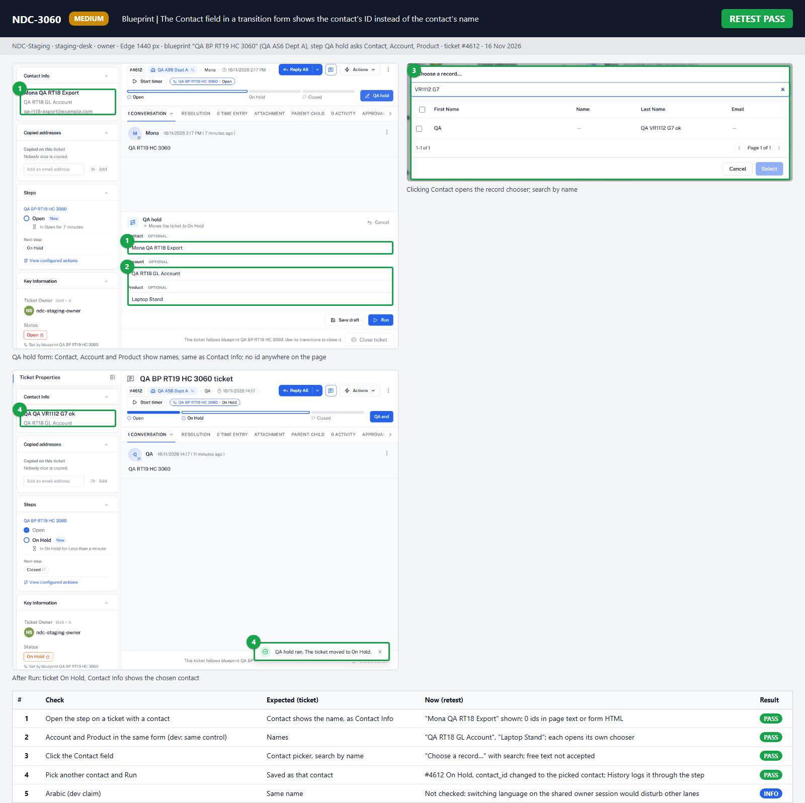 |
| NDC-3037 PASS | Blueprint | A transition owner that does not exist is accepted and shown as a raw id | 19 | Save a blueprint with a random owner id → 422 BLUEPRINT_OWNER_UNKNOWN "No user exists with id …" naming the tr…Save a blueprint with a random owner id → 422 BLUEPRINT_OWNER_UNKNOWN "No user exists with id …" naming the transition; nothing stored (was: 201, id stored) [PASS] Put the unknown id into an existing blueprint (draft and direct save) → 422 both ways; stored owners unchanged [PASS] Dev: designer shows old unknown ids as "Unknown user" → Not checked live: the server no longer lets such an id be saved (dev states the same) [INFO] Malformed id → 422, but the message exposes .NET parser text (System.Guid, BytePositionInLine). Minor, reported separately [INFO] | 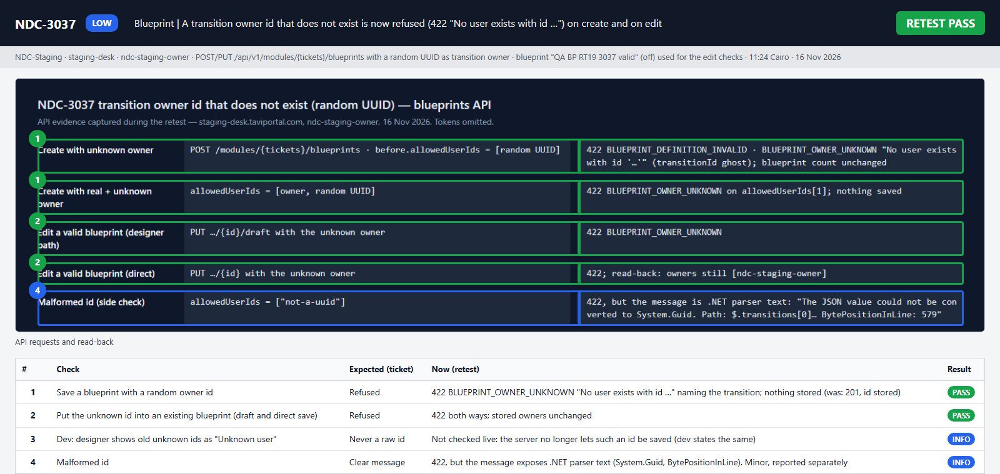 |
SLA (5)
| Ticket | Title | Rd | What proved it | Evidence |
|---|---|---|---|---|
| NDC-2853 PASS | SLA | The agent chosen in an SLA escalation gets no email, even as a member and admin of the ticket's department | 19b | Escalation L1 (custom template) and L2 (default) to an agent who can see the ticket (#4613, owner Samy) → App …Escalation L1 (custom template) and L2 (default) to an agent who can see the ticket (#4613, owner Samy) → App records both levels "notify done" to Mahmoud Samy (14:20:52 / 14:21:48 Cairo) [INFO] Agent's mailbox, first run #4613 (12:20Z) → Only 'Ticket #4613 assigned to you' arrived; that run was during staging's 500/503 errors (12:30–12:40Z window and session loss), so it is not counted [INFO] Recheck #4690 (owner Samy, same policy) → 'QA RT19 SLA 2853 custom L1 #4690' at 15:13 Cairo and '[SLA] #4690 first response — level 2 (after)' at 15:14 Cairo both arrived in Samy's Gmail [PASS] Agent is a member but cannot see the ticket (#4614) → Skipped no_access + no_recipients; editor hint says so [INFO] | 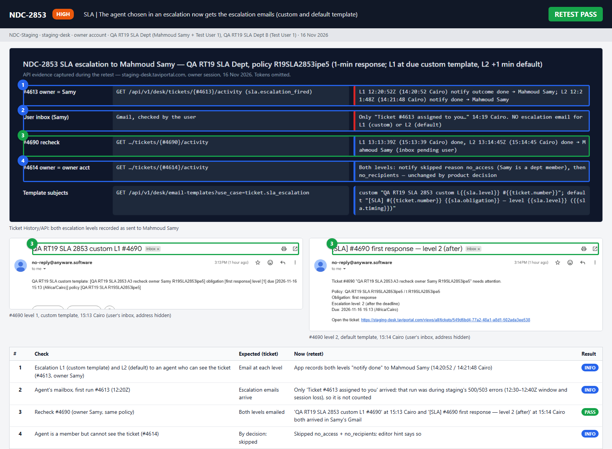 |
| NDC-2833 PASS | SLA | When a support plan's ticket allowance is used up, the plan's SLA still runs on the next tickets | 19b | First ticket of the account → Covered by contract + plan, 0 tickets left, timers running [PASS] Second and th…First ticket of the account → Covered by contract + plan, 0 tickets left, timers running [PASS] Second and third tickets → No SLA; panel "No SLA applies to this ticket. The support plan's ticket allowance is used up for this cycle." [PASS] Plan usage → used 1, remaining 0 [PASS] Ticket with no account → No SLA [PASS] Other account without a contract → Gets the SLA as general (execute-only-with-account rule) [INFO] | 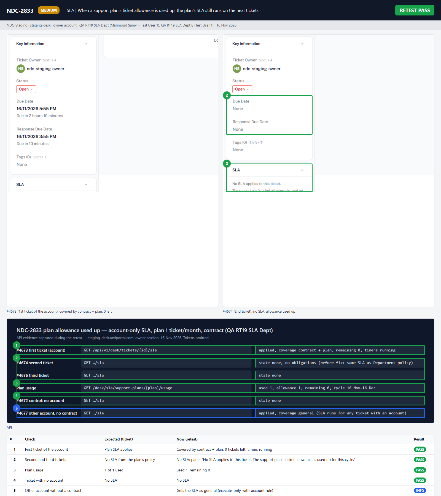 |
| NDC-2852 PASS | SLA | Escalation does not notify the agents chosen in it when they cannot see the ticket | 19b | Escalation names an agent who cannot see the ticket → #4615: "Skipped: no_access", then "no_recipients" [PASS]…Escalation names an agent who cannot see the ticket → #4615: "Skipped: no_access", then "no_recipients" [PASS] Editor says so when the agent is chosen → "Agents are emailed only for tickets they can see. With private ticket sharing, a chosen agent who can't open the ticket is skipped…" (EN; AR not viewed) [PASS] Agent from another department → Screen picker lists only the department's agents; API accepts any agent [INFO] | 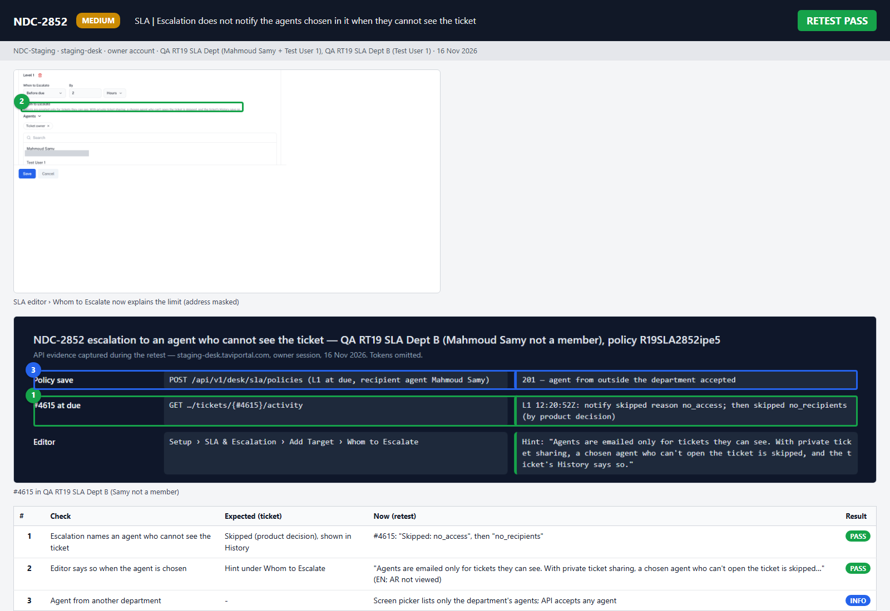 |
| NDC-2834 PASS | SLA | An escalation email template that an SLA uses can be deleted with no warning | 19b | Delete a template an SLA uses → Toast names both SLAs: "…Choose another email in those escalations, then delet…Delete a template an SLA uses → Toast names both SLAs: "…Choose another email in those escalations, then delete it."; row stays; API 409 EMAIL_TEMPLATE_IN_USE [PASS] Confirm dialog → Still generic; stays open after the refusal (minor) [INFO] Template used only in an inactive SLA's resolution level → 409 naming that SLA [PASS] After refusal → Template 200; SLA still points at it [PASS] Controls: unused / unlinked template → 204 / 204 [PASS] | 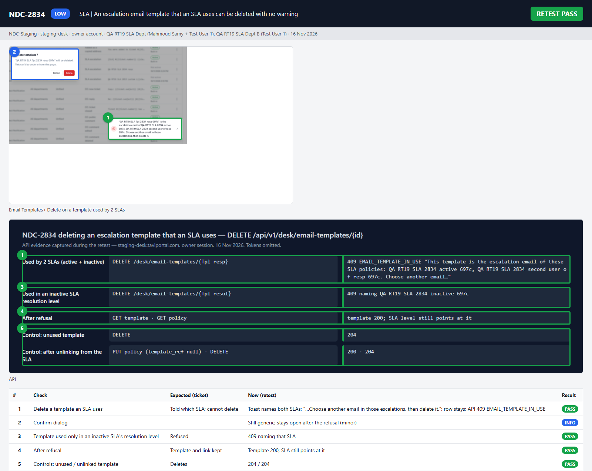 |
| NDC-2835 PASS | SLA | A "Before due" escalation longer than the target time can be saved | 19b | Respond 1 h + Level 1 Before due 2 h in the target dialog → Target dialog closes, no message (checked at SLA s…Respond 1 h + Level 1 Before due 2 h in the target dialog → Target dialog closes, no message (checked at SLA save) [INFO] Save the SLA → POST 400; banner "Make the before-due time shorter than the target time" (prefixed with the raw path targets[0].escalations.response[0].offset) [PASS] API: 2 h, equal 60 m, 61 m, 25 h vs 1 day → 400 before_not_shorter_than_target on the level's offset [PASS] Resolution escalation; edit of a saved SLA → 400; stored value unchanged [PASS] Control 59 m before a 1 h target → 201 [PASS] | 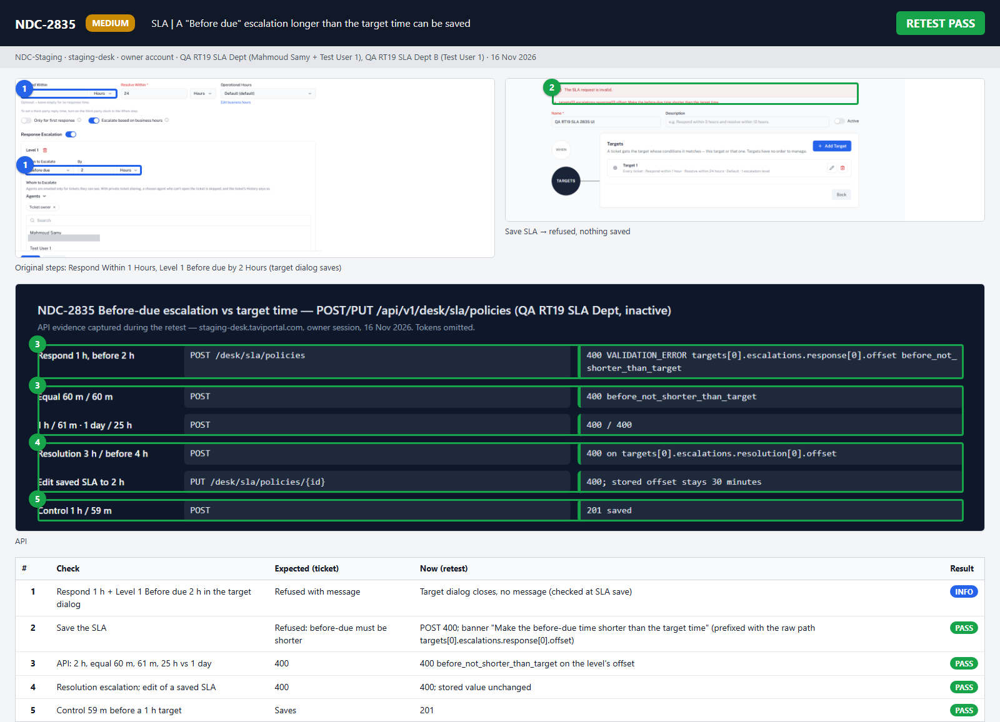 |
Workflow Rules (5)
| Ticket | Title | Rd | What proved it | Evidence |
|---|---|---|---|---|
| NDC-2962 PASS | Workflow Rules | A line break in a webhook header value adds an extra header to the outgoing request | 19 | Save a header value / name with a line break or control character → 400 with the header named (CRLF, LF, CR, N…Save a header value / name with a line break or control character → 400 with the header named (CRLF, LF, CR, NUL value; CRLF name); a tab is accepted (allowed in HTTP) [PASS] Save Host, Content-Length, Transfer-Encoding, Connection, non-ASCII → 400 "… is set by the request itself and cannot be changed" / "only ASCII" [PASS] Other write paths → PATCH rule 400; saved action POST/PATCH 400; PUT not available [PASS] What the webhook sends → Webhook to our own staging API: configured Authorization reached it (TOKEN_INVALID); a line break coming from a record value added no header (TOKEN_MISSING); header values are not templated [PASS] Execution History shows the request headers → Not recorded: dispatch row has target, status, HTTP, details only [INFO] Rule saved before the fix fails once with the reason → Not checkable: no path saves such a header; stored values are masked "********" [INFO] What is sent was checked without a public receiver: the webhook was pointed at staging-desk's own API and its 401 answer used to see which Authorization header arrived. Not checkable: a rule saved before the fix (none exists; no write path accepts such a header). | 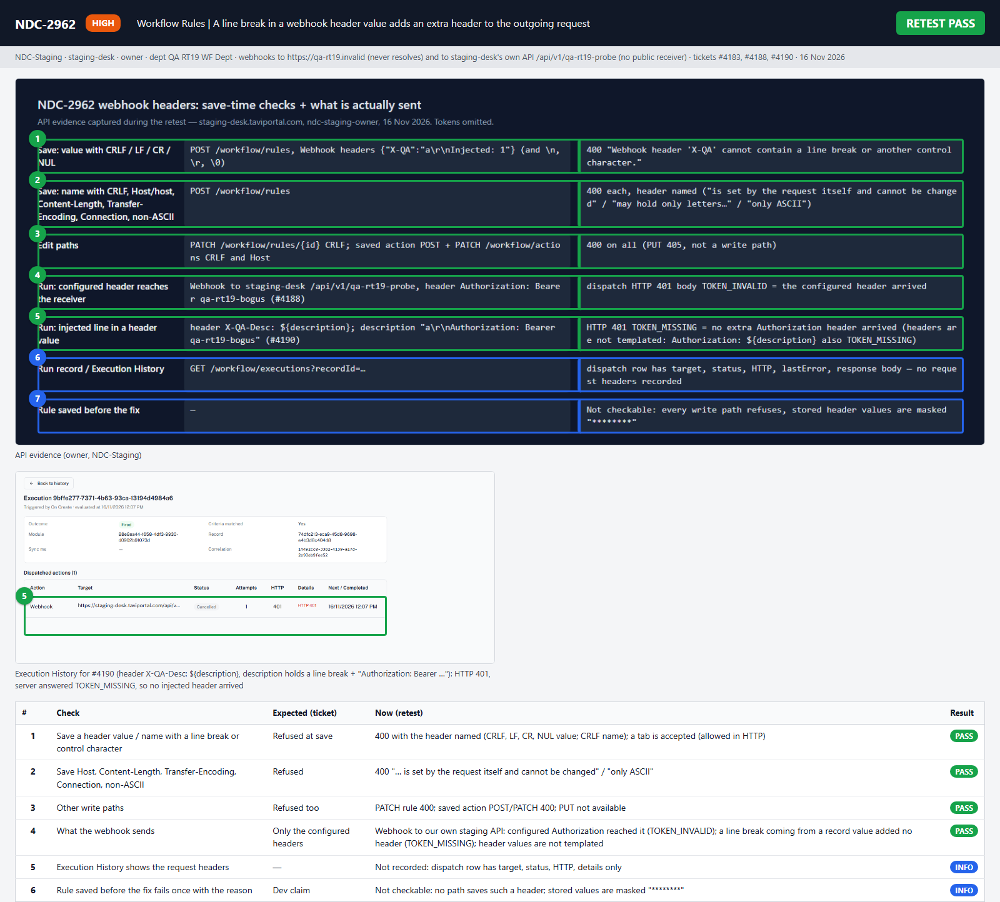 |
| NDC-2963 MATCHES ZOHO | Workflow Rules | Script saved in an Add Comment action runs when an admin opens the rule | 19 | Open the rule in the editor → onerror / javascript: href stripped; window.__xss unset; no dialog [PASS] Edito…Open the rule in the editor → onerror / javascript: href stripped; window.__xss unset; no dialog [PASS] Editor shows the body as plain text → Rendered as rich text: broken image, bold, link (safe) [INFO] Ticket comment posted by the action → Safe; rendered as rich text (stored body_html keeps the raw <img onerror>, the screen strips it) [INFO] Rules list and Execution History → List row and Execution History show no HTML; window.__xss unset [PASS]Zoho Desk comparison (live, 16 Nov): Zoho has no built-in Add comment action; a comment added through its comments API with the same HTML body (img onerror, b, javascript: link) is shown as safe rich text — onerror and the javascript: link stripped, broken image, bold, link without href, no script. TAVI now shows exactly the same. Decision (QA lead, 16 Nov 2026): accepted as matching Zoho, moved to Done. Hardening note for the developers: Zoho strips the dangerous attributes before saving; TAVI still stores the raw <img onerror> in the comment HTML and only cleans it on display, so email, API or export consumers could receive it raw. Decision (QA lead, 16 Nov 2026): accepted as matching Zoho, moved to Done. Hardening note for the developers: Zoho strips the dangerous attributes before saving; TAVI still stores the raw <img onerror> in the comment HTML and only cleans it on display, so em | 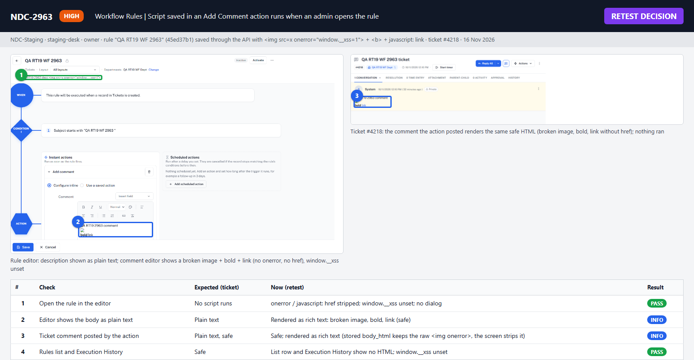 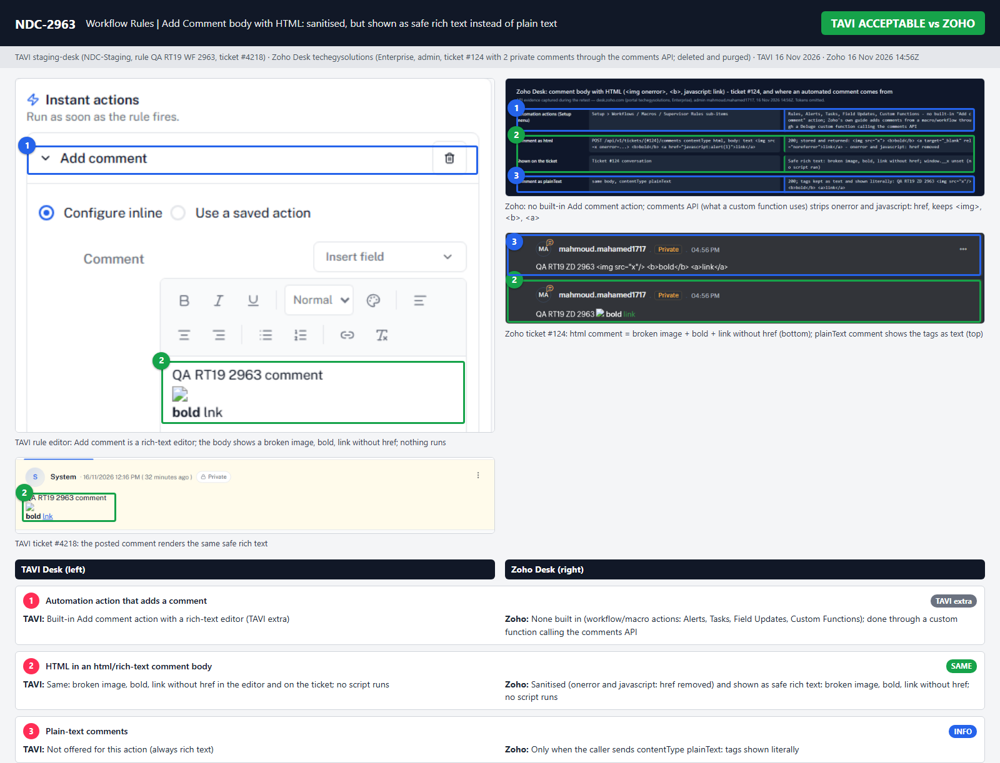 |
| NDC-2968 PASS | Workflow Rules | Create Record action skips required fields and leaves the new record without an owner | 19 | Save Create Record in Calls with only Start Time → 400 "fill in the required fields Subject, Call Status, Cont…Save Create Record in Calls with only Start Time → 400 "fill in the required fields Subject, Call Status, Contact Name, Department." [PASS] All required fields; ticket owned by CES1 → Call created, owner = CES1 (the ticket owner), Department from the ticket, Succeeded [PASS] Required field from an empty placeholder → Cancelled "Not created: Calls needs Subject…", nothing created [PASS] Created By on the Call → System (dev: by design); not checked on screen [INFO] | 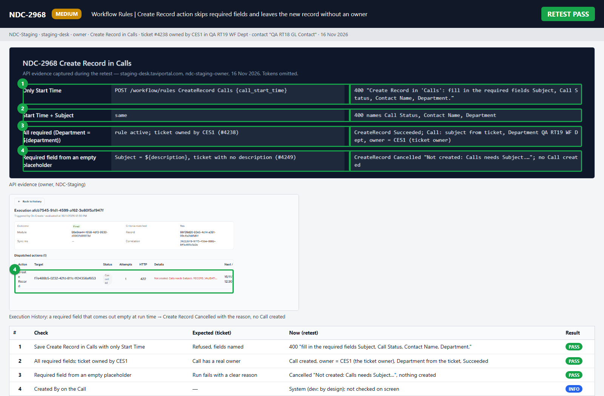 |
| NDC-2973 PASS | Workflow Rules | Owner Assignment action assigns suspended agents and agents outside the department | 19 | Agent not in the department (active and suspended) → Owner kept; Skipped "not an agent of the ticket's departm…Agent not in the department (active and suspended) → Owner kept; Skipped "not an agent of the ticket's department" [PASS] Agent in the department, suspended → Owner kept; Skipped "not an active agent of the ticket's department" (ticket 3 s after suspension) [PASS] Control: active agent in the department → Succeeded [PASS] Label → Skipped with the reason (dev design, same as NDC-2966) [INFO]Note: the action is labelled Skipped (with the reason), not Failed as the ticket's Expected says; the ticket keeps its owner in every refused case, so the behaviour is correct. | 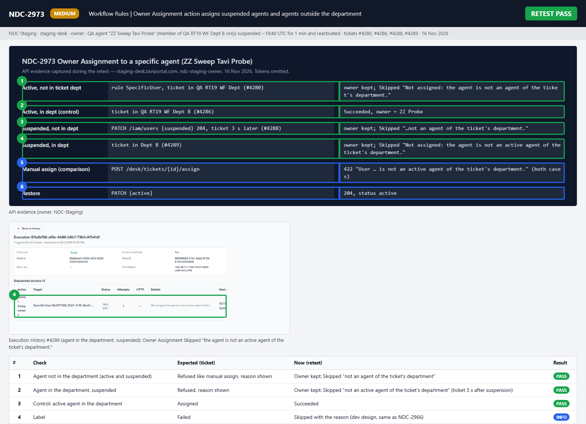 |
| NDC-2966 PASS | Workflow Rules | "Send happiness email" is logged as Succeeded while ratings are off | 19 | Ratings off → Skipped "Not sent: customer happiness ratings are switched off." [PASS] Ratings on, department …Ratings off → Skipped "Not sent: customer happiness ratings are switched off." [PASS] Ratings on, department not collecting → Skipped "Not sent: the ticket's department does not collect ratings." [PASS] Settings restored → diff none [INFO] | 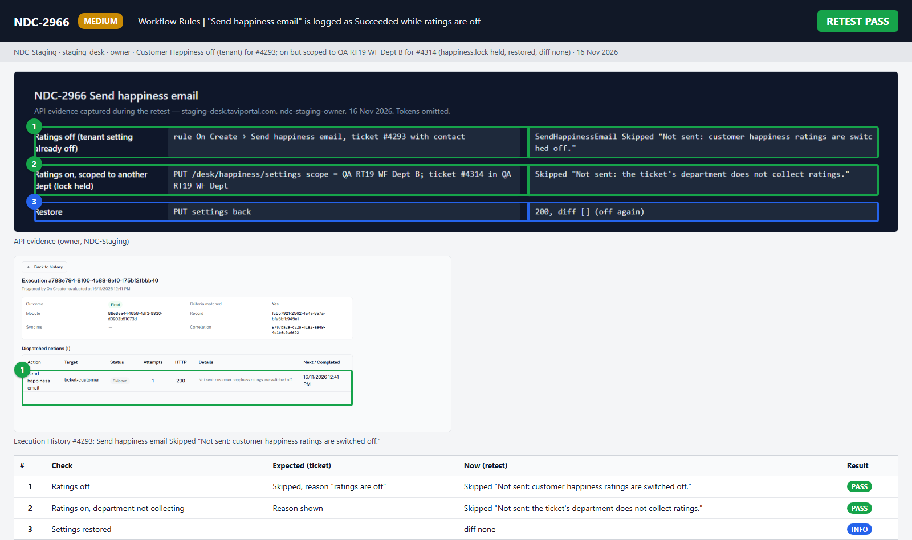 |
Skills (4)
| Ticket | Title | Rd | What proved it | Evidence |
|---|---|---|---|---|
| NDC-2931 PASS | Skills | Skill-based assignment leaves a ticket unassigned unless one agent has every skill on it; Zoho assigns to an agent with any of them | 19 | Skill Based rule, ticket S3 (nobody) + S1 (Test User 1) → #4514 assigned to Test User 1 (was: Unassigned) [PAS…Skill Based rule, ticket S3 (nobody) + S1 (Test User 1) → #4514 assigned to Test User 1 (was: Unassigned) [PASS] Same with S3 + S2 (Dev Team 2) → #4515 assigned to Dev Team 2 [PASS] Ticket whose only skill nobody holds → #4516 Unassigned after 20 s [PASS] S1 + S2, three tickets → #4517-#4519 Test User 1, Dev Team 2, Test User 1 (turns) [PASS] Assign by Skills on one ticket (API + ticket menu) → API #4520 to Test User 1; screen #4575 to Dev Team 2, toast "…holds at least one of these skills." [PASS] Assign by Skills when nobody holds any skill / nobody online → "No agent of the department holds any of the ticket's skills." (#4521); offline agents not allowed: "No agent who holds these skills is online." [PASS] Setup help text → Round Robin rule editor: "Agents get the tickets that match their skills." (neutral; does not say "at least one") [INFO] | 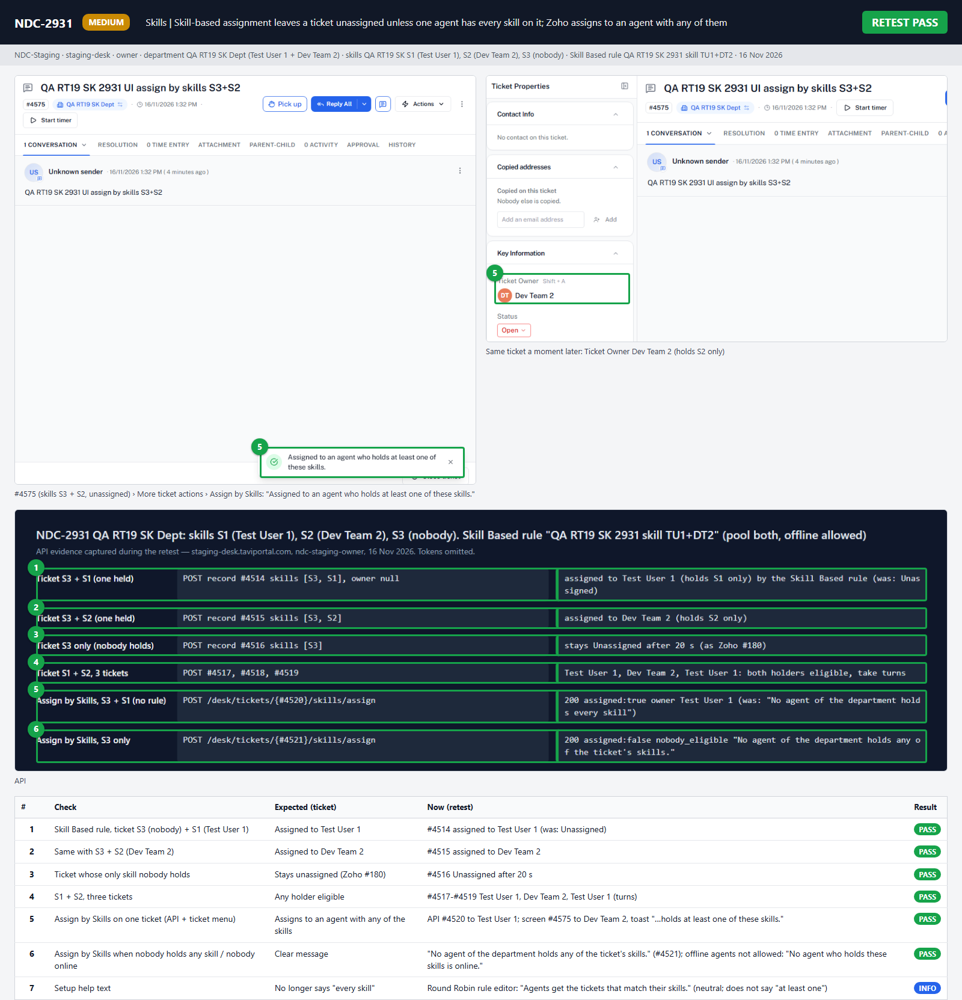 |
| NDC-2932 PASS | Skills | Skill-based round robin assigns a ticket that has no skills, even to an agent who is not in the rule; Zoho leaves it unassigned | 19 | Ticket with no skills matches the Skill Based rule (3 tickets) → #4522, #4523, #4524 Unassigned after 25 s; no…Ticket with no skills matches the Skill Based rule (3 tickets) → #4522, #4523, #4524 Unassigned after 25 s; no assignment in feed or History (was: given to an agent outside the rule) [PASS] Ticket whose skill only an agent outside the rule holds → #4526 (S2, Dev Team 2 not in the pool) Unassigned [PASS] Skill added later (dev claim) → #4522 edit skills [S1]: assigned to Test User 1 [PASS] No backlog row (dev claim) → Assign backlogs ON 90 s: #4523, #4524, #4526 still Unassigned (no API to read backlog rows directly) [PASS] | 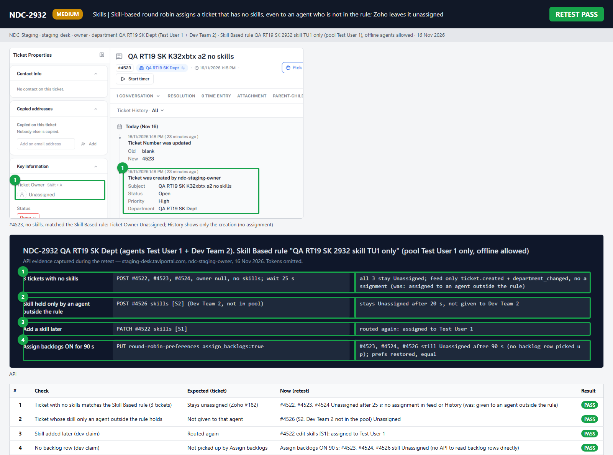 |
| NDC-2970 PASS | Skills | Round robin department threshold counts the agent's open tickets in every department, so skill-based assignment stops; Zoho counts only that department | 19 | Dev Team 2: 3 Open in the department (+2 On Hold), 9 in all; threshold 4; skill ticket → #4204 -> Dev Team 2 […Dev Team 2: 3 Open in the department (+2 On Hold), 9 in all; threshold 4; skill ticket → #4204 -> Dev Team 2 [PASS] Control: agent now at 4 Open = threshold → #4205 unassigned [PASS] Other departments and On Hold left out (shared count, NDC-2824 card) → #4529 assigned with an extra other-department ticket; #4532 assigned with an On Hold ticket [PASS] New defect, separate (same as NDC-2824 row 6) → Some agents carry 1-2 phantom tickets in the count [INFO]Also seen (separate issue, to be filed): for some agents the threshold count includes 1–2 tickets that do not exist in any list (e.g. after a ticket was created with no number or History), so they are assigned later than the threshold says. | 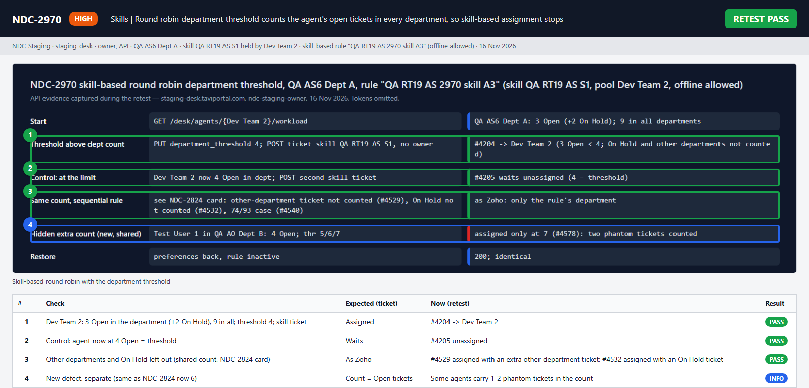 |
| NDC-2971 PASS | Skills | Workflow Add/Remove skills list and Create Ticket Skills field offer deleted skills (plus inactive and other departments' skills); a ticket saved with a deleted skill keeps it | 19 | Workflow Add / Remove skills, rule with a department → Before and after the delete: S1, S2, S3, Long only; no …Workflow Add / Remove skills, rule with a department → Before and after the delete: S1, S2, S3, Long only; no other department, no inactive [PASS] Skill saved on the action that is now deleted / inactive (dev claim) → "QA RT19 SK Del (removed)", "QA RT19 SK Inact (removed)", ticked, can be unticked [PASS] Rule with no department; New Ticket → No-department rule: every department's active skills (64), no inactive, Del only as "(removed)"; New Ticket: S1, S2, S3, Long [PASS] Ticket that had the deleted skill → #4537 [Del, S1] became [S1] in API and on screen; ticket Edit Skills no longer offers Del [PASS] Save a ticket with the deleted skill → Create and edit 422 "'QA RT19 SK Del' is not one of the allowed values." [PASS] Ticket page Edit Skills still offers inactive / other-department skills → Belongs to NDC-2933 (see there) [INFO] Dev question: the 32 QA SK12 skills → QA SK12 Dept A still has 32 skills (never deleted, as dev says); a real delete now works [INFO] | 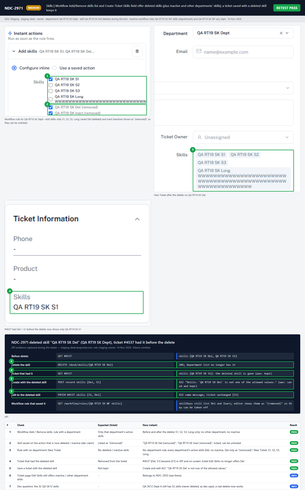 |
Assignment Rules (4)
| Ticket | Title | Rd | What proved it | Evidence |
|---|---|---|---|---|
| NDC-2824 PASS | Assignment Rules | Round robin threshold counts the agent's tickets in every department and On Hold tickets | 19 | Department threshold = Open tickets in the rule's department (Dev Team 2: 1 there, 23 in all) → thr 1 waits (#…Department threshold = Open tickets in the rule's department (Dev Team 2: 1 there, 23 in all) → thr 1 waits (#4525), thr 2 assigned (#4527) [PASS] Add an Open ticket for the agent in another department → thr 2 still assigned (#4529) [PASS] Add an Open ticket in the department, then put it On Hold → Open: waits (#4531); On Hold: assigned (#4532); Escalated counts as open (#4533) [PASS] Agent level threshold → thr 1 waits (#4542), thr 2 assigned (#4543) [PASS] Agent with 74 Open in QA AS6 Dept A and 93 in all departments → thr 74 waits (#4539), thr 75 assigned (#4540) [PASS] New defect, separate: rule counts 1-2 tickets the agent does not have → Test User 1: 4 Open in AO-B, assigned only at thr 7 (#4576/#4577 wait, all day); Dev Team 2: counted 2 with 1 Open since a ghost ticket (no number, no History) was created 11:25Z [INFO]Also seen (separate issue, to be filed): for some agents the threshold count includes 1–2 tickets that do not exist in any list (e.g. after a ticket was created with no number or History), so they are assigned later than the threshold says. | 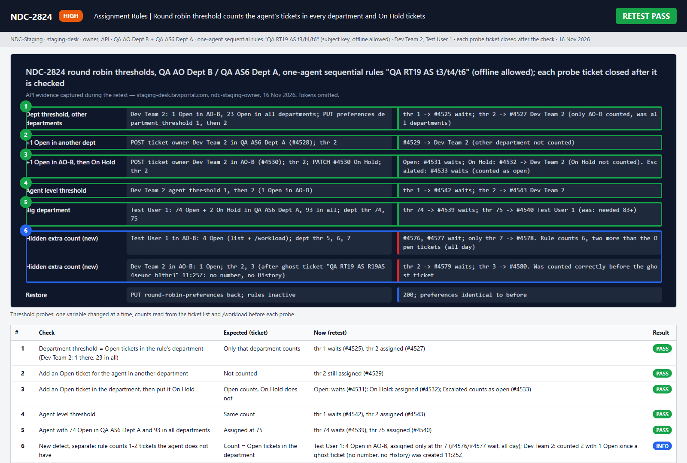 |
| NDC-3046 PASS | Assignment Rules | Round robin rule with an SLA condition does not assign new tickets | 19 | New unassigned ticket matching the SLA; RR rule (Create + Update) with SLA Name condition → #4335, #4336 assig…New unassigned ticket matching the SLA; RR rule (Create + Update) with SLA Name condition → #4335, #4336 assigned to Dev Team 2 by the rule, trigger "created", 2.7–3.1 s; SLA applied once (was: Unassigned until edited) [PASS] Same with a rule that runs on Ticket Create only → #4337 assigned by the create-only rule, trigger "created" [PASS] New Ticket screen, Ticket Owner cleared (dev did not check) → #4399 SLA applied, then assigned 3 s later, "Triggered by A new ticket" [PASS] Edit/move that changes the SLA, chat tickets, direct-rule move during create → Not checked (dev lists them as not covered by this fix) [INFO] | 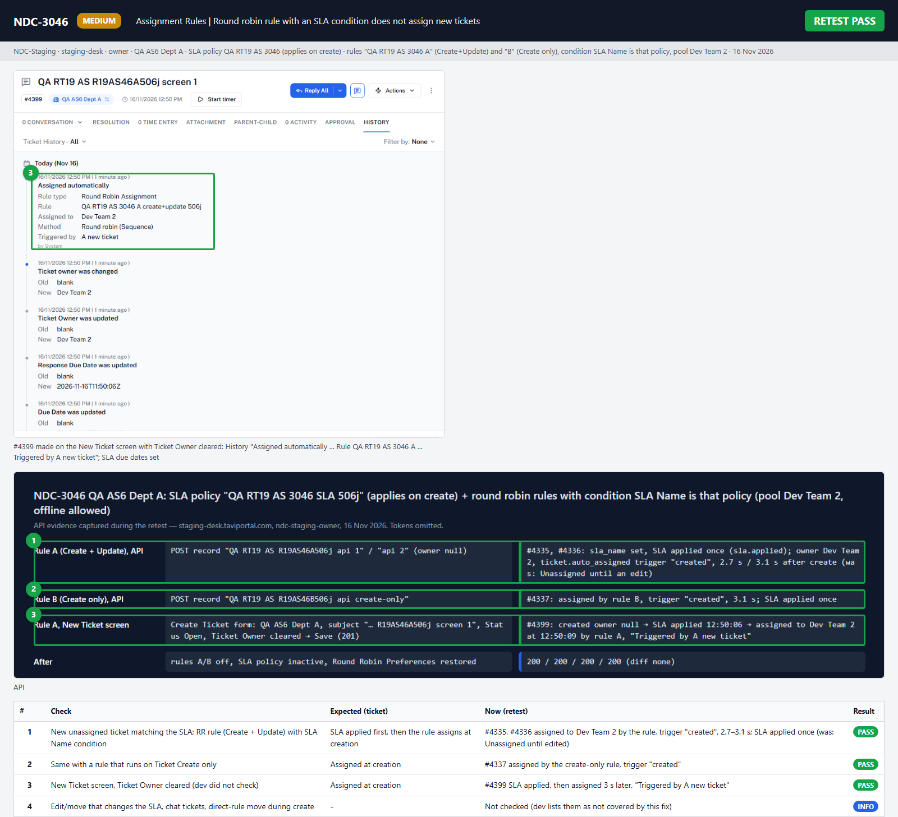 |
| NDC-2838 PASS | Assignment Rules | Round robin backlog skips an old ticket without saying why | 19 | Old ticket (no customer reply in 30 days) reaches a matching round robin rule → "Not assigned by round robin" …Old ticket (no customer reply in 30 days) reaches a matching round robin rule → "Not assigned by round robin" with rule type, rule name and "No customer reply in the last 30 days" (was: no entry) [PASS] Same in the API activity → ticket.auto_assign_skipped, reason no_recent_customer_reply [PASS] Control: new ticket on the same rule → Assigned to Dev Team 2 at once [PASS] Assign backlogs on for 90 s → Still unassigned; one entry only [PASS] Arabic History text; ticket that starts waiting for another reason and later passes 30 days → Not checked (dev also lists the second as not covered) [INFO] | 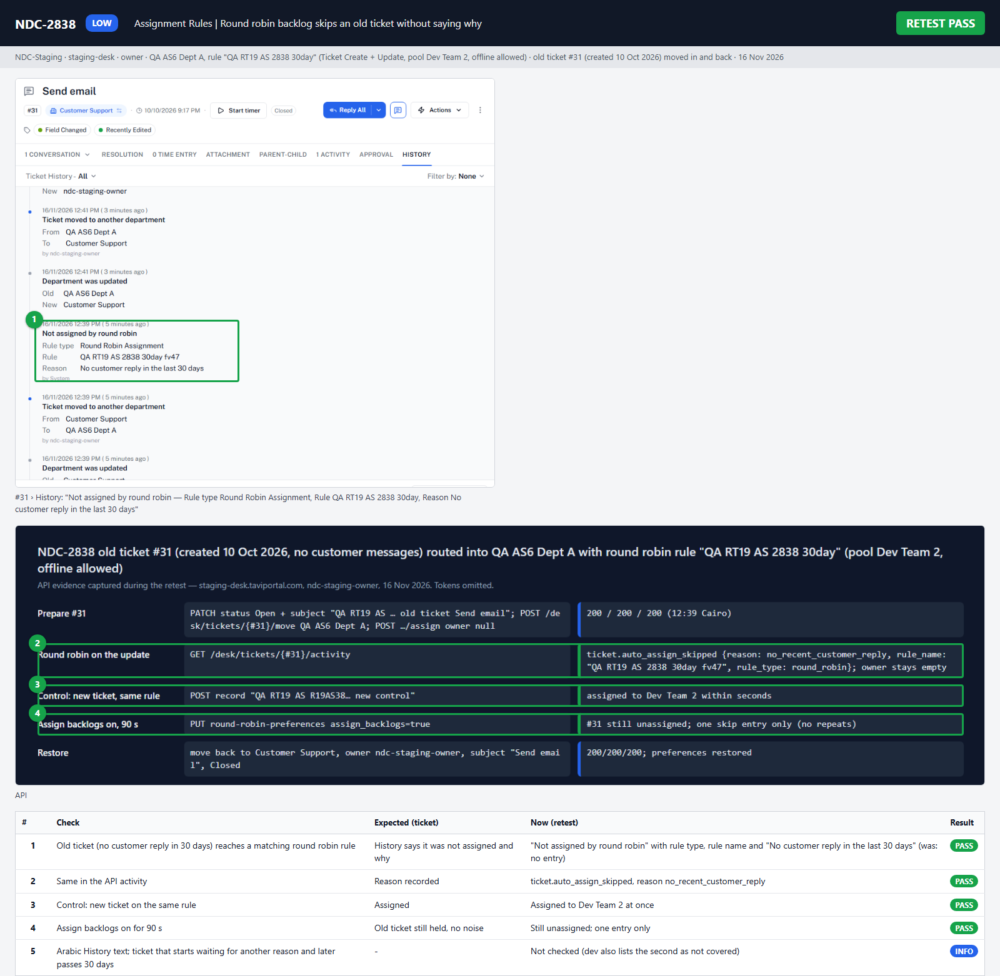 |
| NDC-2839 PASS | Assignment Rules | An agent without the assignment permission can still read Round Robin Preferences and Team Assignment | 19 | Agent opens Assignment Rules → "You can't manage assignment" page; rules GET 403 [PASS] Agent reads Round Rob…Agent opens Assignment Rules → "You can't manage assignment" page; rules GET 403 [PASS] Agent reads Round Robin Preferences → 403 "Missing required permission 'desk:assignment:manage'" (was 200) [PASS] Agent reads Team Assignment → 403 (was 200) [PASS] Same in another department; saving both → QA SK13 Dept A GETs 403; PUTs 403 [PASS] Agent's ticket screens still get the Team Assignment flag → Department list 200 with team_assignment_enabled for 45 departments [PASS] Assignment notification settings → Agent can still GET them (master switches + notify flags); outside this ticket [INFO] | 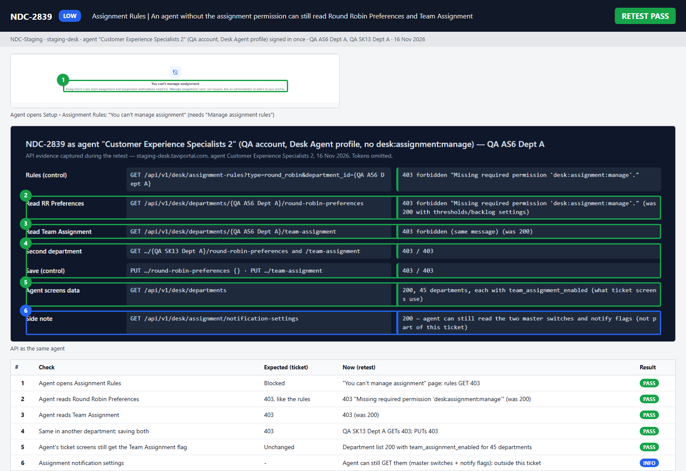 |
Notifications (3)
| Ticket | Title | Rd | What proved it | Evidence |
|---|---|---|---|---|
| NDC-2864 PASS | Notifications | Agent notification rules with Email on send no email, only the in-app notification, unless a custom template is chosen | 19b | Rule row with the default template → Default now "Default — the built-in email"; hint: built-in email + in-app…Rule row with the default template → Default now "Default — the built-in email"; hint: built-in email + in-app; Email on, channels in_app + email [PASS] Assign, comment, team assign, custom template → Bell for all four in Samy's account (12:24–12:27Z); Samy's email settings on [PASS] Email in Samy's Gmail → 'Ticket #4616 assigned to you…' and 'New comment on ticket #4616…' arrived at 14:24 Cairo (default built-in email) [PASS] | 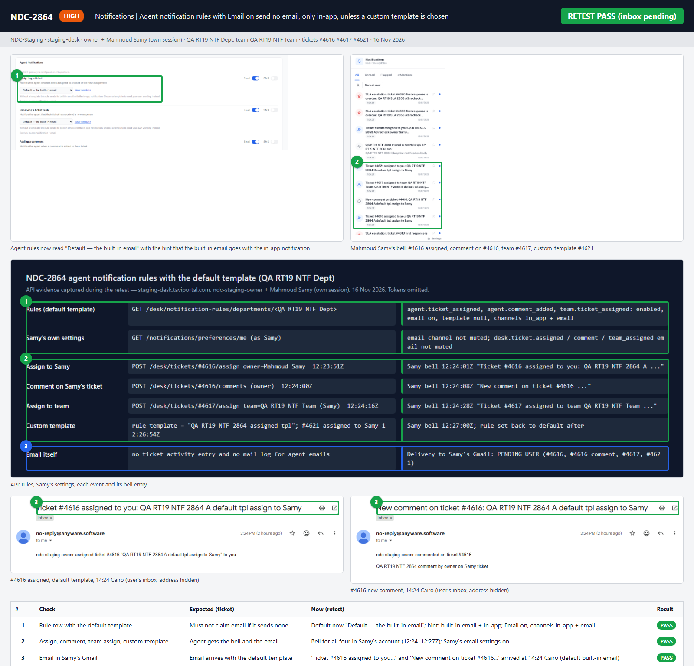 |
| NDC-2851 PASS | Notifications | Closing tickets in bulk sends the "ticket closed" email to every customer | 19b | Bulk Close on the screen and by API → #4681 #4682 (screen) and #4679 #4680 (API) Closed, no reply queued [PASS…Bulk Close on the screen and by API → #4681 #4682 (screen) and #4679 #4680 (API) Closed, no reply queued [PASS] Single close control → #4683 "Your ticket #4683 has been closed" sent [PASS] Bulk close with ratings on → #4685 #4686 nothing sent; control #4687 sent with link [PASS] Mass Update Status = Closed → Not testable here: Status greyed in Mass Update; macro not checked [INFO] Customer inbox → Only #4683 (single close, 14:58) and #4687 (single close with rating, 15:09) arrived; nothing for the 6 bulk-closed tickets [PASS] | 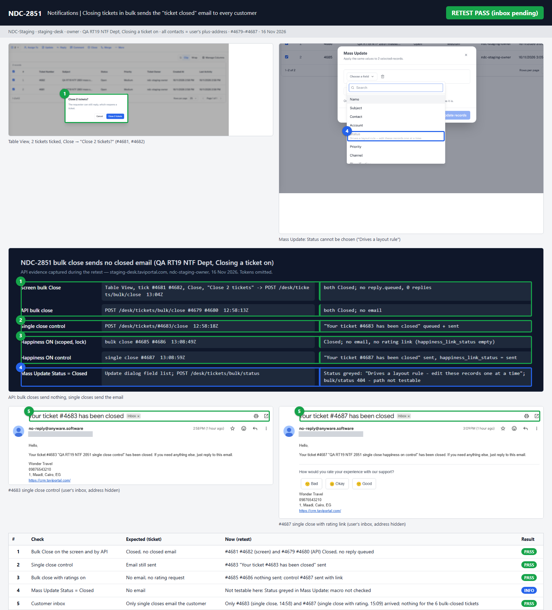 |
| NDC-3053 PASS | Notifications | "Closing a ticket" email is sent only when Customer Happiness is on | 19b | Rule never saved, Happiness off → "Closing a ticket" shows off (is_enabled false, not customized) [PASS] Rule…Rule never saved, Happiness off → "Closing a ticket" shows off (is_enabled false, not customized) [PASS] Rule on, Happiness off, close #4675 → "Your ticket #4675 has been closed" queued + sent 12:56Z (also #4631) [PASS] Rule on, Happiness on for the dept, close #4678 → Sent with the rating link, happiness_link_status = sent; Happiness restored, diff none [PASS] Runs during the 12:30–12:40Z staging outage → #4628 nothing sent; #4629 sent on retry without link status; not counted [INFO] Customer inbox → #4631 and #4675 (Happiness off): closed email, no rating link; #4678 (Happiness on): closed email with Bad / Okay / Good [PASS] #4629 (closed during the outage, sent on retry) → Closed email arrived WITHOUT the rating link although Happiness was on for that run — retry may drop the link (separate observation) [INFO] | 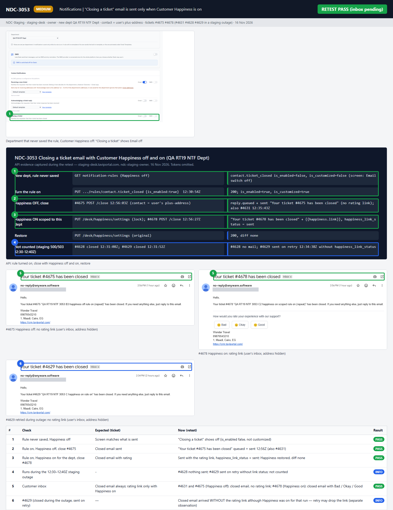 |
Ticket History (3)
| Ticket | Title | Rd | What proved it | Evidence |
|---|---|---|---|---|
| NDC-3066 PASS | Ticket History | Automatic blueprint steps show the wrong From state and To state | 19c | QA auto ran by itself (#4699, #4700) → From state Escalated, To state On Hold (was Open → Escalated) [PASS] Q…QA auto ran by itself (#4699, #4700) → From state Escalated, To state On Hold (was Open → Escalated) [PASS] QA end ran by itself (#4699, #4700) → From state On Hold, To state Closed [PASS] QA first + Status changed lines → QA first Open → Escalated; each Status changed line matches its transition line [PASS] Developer: old rows read right with no data change → #4165 QA auto Escalated → On Hold; #4166 QA auto Escalated → On Hold, QA end On Hold → Closed [PASS] History API transition row → Still no from/to on ticket.blueprint_transition (null old/new); the status row of the same moment carries it. Developer fixed the screen only [INFO] | 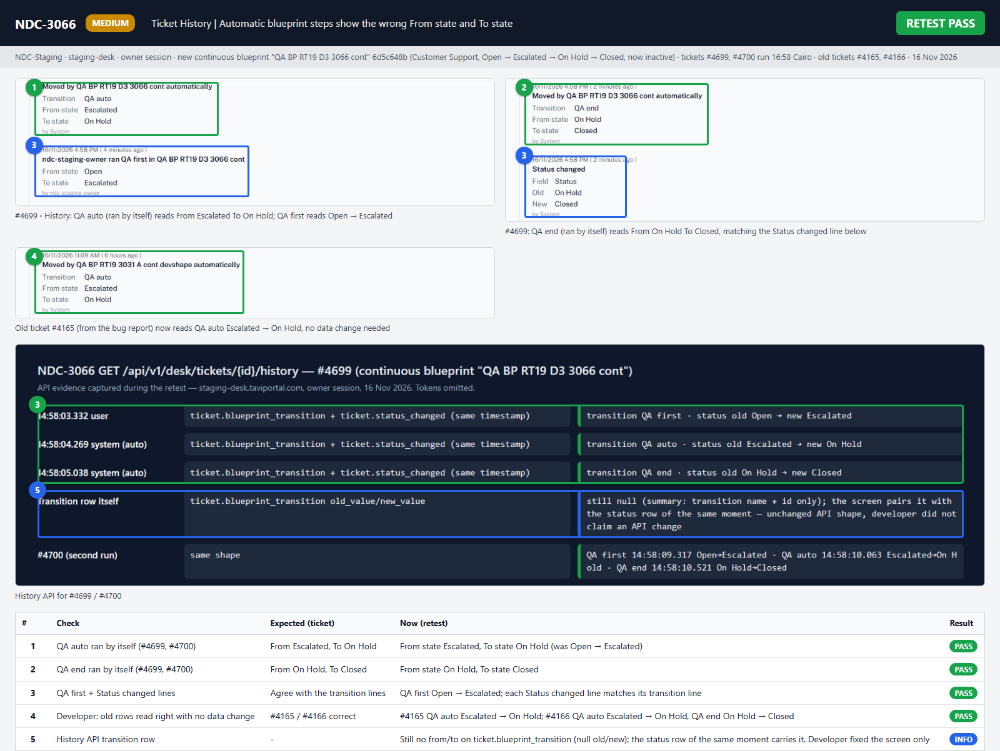 |
| NDC-3034 PASS | Ticket History | Blueprint lines show the internal name "BlueprintStateChanged" and text like "QA BP F2U|entered|Open" | 19 | Run a transition, open History → "<agent> ran <transition> in <blueprint>" with From state / To state; "Entere…Run a transition, open History → "<agent> ran <transition> in <blueprint>" with From state / To state; "Entered blueprint … at Open" [PASS] Automatic steps, completing the blueprint → "Moved by <blueprint> automatically · Transition QA end", "Completed blueprint …", "Ticket closed by blueprint transition QA end in …" [PASS] Search the whole History tab of #4165, #4166, #4170 → No "BlueprintStateChanged" and no "|entered|" pipe text on any of the three (was: extra lines with both) [PASS] From/To on an automatic step → QA end (On Hold → Closed) and QA auto (Escalated → On Hold) both show From Open, To Escalated. New defect, reported separately [INFO] Other History lines seen → "Closed Time was updated · New 2026-11-16T09:09:14.975698+00:00" (raw timestamp); "Resolution Time New 3" (no unit). Not blueprint-specific [INFO] | 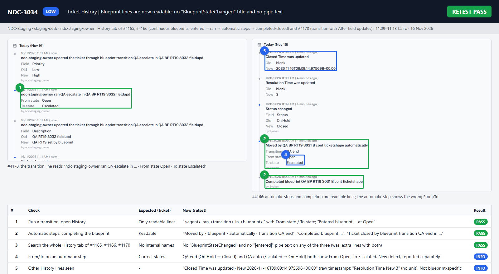 |
| NDC-3044 PASS | Ticket History | A customer reply from the Help Center is shown as "Email received" | 19b | Customer replies on the ticket in the Help Center; agent opens History → "Reply received from the Help Center"…Customer replies on the ticket in the Help Center; agent opens History → "Reply received from the Help Center" (activity message.received, source help_center, actor customer) [PASS] Conversation → "test reply" listed as an inbound reply from the customer, 2 conversations [PASS] | 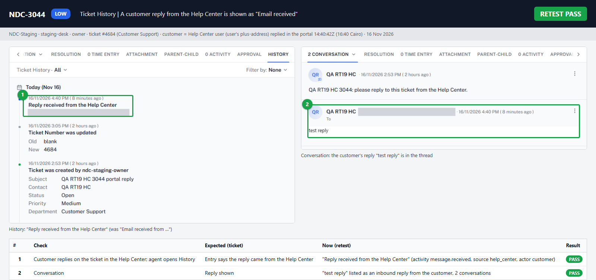 |
Blueprint API (2)
| Ticket | Title | Rd | What proved it | Evidence |
|---|---|---|---|---|
| NDC-3069 PASS | Blueprint API | A malformed transition owner id returns .NET parser text instead of a readable error | 19c | POST with owner id "not-a-uuid" → 422 path transitions[0].before.allowedUserIds[0]: "Transition QA x: 'not-a-u…POST with owner id "not-a-uuid" → 422 path transitions[0].before.allowedUserIds[0]: "Transition QA x: 'not-a-uuid' is not a valid user id." No .NET parser text [PASS] Bad id in 2nd place / a number → allowedUserIds[1] '12345' and 42 both named the same way [PASS] Same on PUT of an existing blueprint → 422 same message; owners and revision unchanged [PASS] Control: valid but unknown id; nothing stored → "No user exists with id …" as before; no blueprint created by the refused calls [PASS] Developer: other wrong-typed values named the same way → isTerminal "yes" → "'yes' is not a valid value for isTerminal." [PASS] Side note: state position.x = "abc" → 201, stored as-is (layout-only field not type-checked); outside this ticket [INFO] | 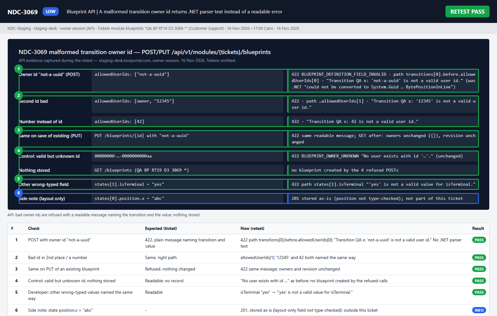 |
| NDC-3070 PASS | Blueprint API | A save that sends no revision is accepted and silently overwrites a newer change | 19c | Rename saved with revision 1 → 200, revision 2 [INFO] PUT and PUT …/draft from the old copy with no revision …Rename saved with revision 1 → 200, revision 2 [INFO] PUT and PUT …/draft from the old copy with no revision (and revision null) → 422 path revision: "Send the revision you loaded, so this save cannot overwrite a newer change." (was 200) [PASS] Stale revision 1 on PUT and draft → 409 BLUEPRINT_REVISION_CONFLICT [PASS] GET after the refused saves → Still "renamed by A", revision 2, description untouched [PASS] Developer: list Active switch sends the revision; current revision still saves → Switch PUT carries revision 3 (blocked); PUT with revision 2 → 200, revision 3 [PASS] | 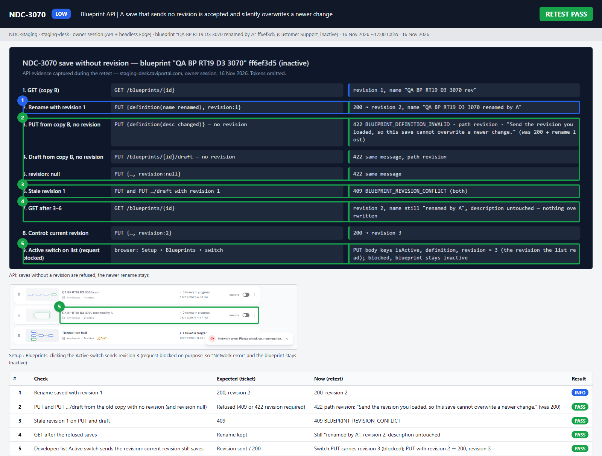 |
Blueprint designer (2)
| Ticket | Title | Rd | What proved it | Evidence |
|---|---|---|---|---|
| NDC-3038 PASS | Blueprint designer | On a large blueprint the transition labels and buttons overlap; Firefox takes 43 s to open it | 19 | Labels and buttons on the dense graph, Edge → 0 overlapping label pairs, 0 label/button, 0 label/state in defa…Labels and buttons on the dense graph, Edge → 0 overlapping label pairs, 0 label/button, 0 label/state in default view, after Fit and on hover (was: overlap on every row, 138 pairs per dev) [PASS] Same in Firefox → 0 / 0 / 0; + and delete appear on hover/selection only [PASS] Open time once the app is loaded (Edge, Firefox) → Edge 2.2 s; Firefox 2.5–3.1 s (one 5.1 s); selecting a state 0.3–0.5 s (was: Edge 9.0 s, Firefox 43 s) [PASS] Cold open, 6 Firefox + 6 Edge, new browser each → Firefox 5.7–34.5 s, Edge 3.6–25.3 s: both slow in the same way when the network is slow (the earlier 43.4 s fits this) [INFO] Is Firefox slow at drawing the designer? → Slow part is network (528 KB index.js 9.8–21.7 s, other bundles 7–16 s, both browsers). From last response to 30 states drawn: Firefox 0.3–0.7 s, Edge 0.1–0.4 s [PASS] | 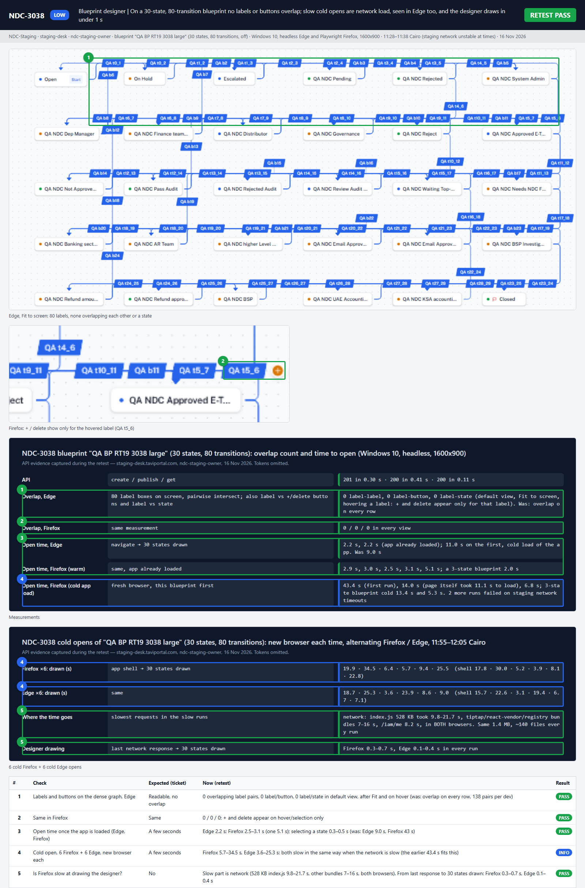 |
| NDC-3039 PASS | Blueprint designer | Issue list before publishing: the "name" line can't be clicked and a missing department isn't counted | 19 | Count → "4 issues to fix before publishing": name, department, 2 transition names (was: 3, Department missing)…Count → "4 issues to fix before publishing": name, department, 2 transition names (was: 3, Department missing) [PASS] "The blueprint needs a name" → Clickable; focus moves to the Name input (blueprint-details-name) (was: plain text) [PASS] "Choose the department the blueprint belongs to" → Clickable; focus moves to the Department picker [PASS] Transition issues → "The transition from … needs a name" items are clickable and open the transition with its name box [PASS] | 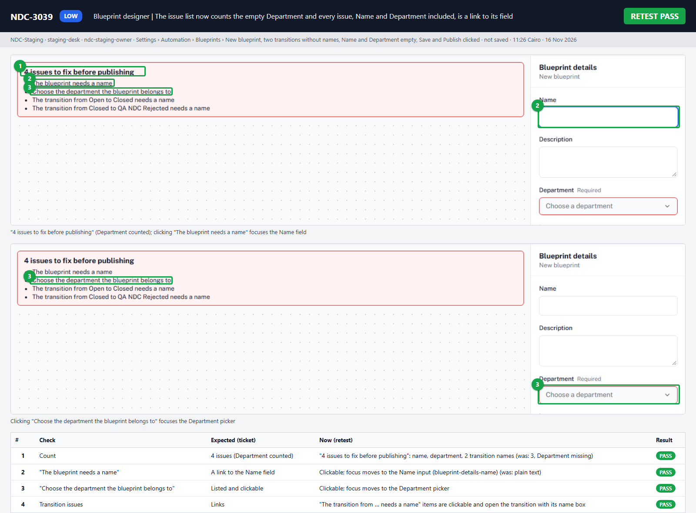 |
Records API (1)
Tickets (1)
5 · New bugs filed today (9)
All in Desk module, Sprint 16, with annotated images and a "relates to" link to the ticket where they were found.
| Bug | Title | Found while retesting | Plane now | Note |
|---|---|---|---|---|
| NDC-3065 | Blueprint | An agent with read-only access to a ticket can still run a transition | NDC-3036 | In Progress | Blueprint lane; you decided it is a bug |
| NDC-3066 | Ticket History | Automatic blueprint steps show the wrong From state and To state | NDC-3034 | Done | fixed the same day, retested in 19c → PASS |
| NDC-3067 | Audit Log | Changes made in the web app show the server's internal address | NDC-3029 | In Progress | |
| NDC-3068 | Ticket History | Closed Time shows a raw timestamp and Resolution Time a blank | NDC-3054 | In Progress | |
| NDC-3069 | Blueprint API | A malformed transition owner id returns .NET parser text | NDC-3037 | Done | fixed the same day, retested in 19c → PASS |
| NDC-3070 | Blueprint API | A save that sends no revision silently overwrites a newer one | NDC-3030 | Done | fixed the same day, retested in 19c → PASS |
| NDC-3071 | Records API | A field value without a "kind" key returns 500 | NDC-2967 | In Progress | assignees Mahmoud, Hegazy, eahmed; label API & Platform |
| NDC-3076 | Round Robin Assignment | Department threshold counts Open tickets the agent does not have | NDC-2275 | Bug | Zoho checked live: Zoho counts correctly |
| NDC-3077 | Tickets | A created ticket can stay without a ticket number and History | NDC-2275 | Bug | Zoho checked live: Zoho always numbers the ticket |
6 · Checked against live Zoho: not bugs
| Finding | Result |
|---|---|
| Ticket Import | Ticket Owner given by agent name is not matched | Zoho Desk live: owner is matched by email only (your note: email is the unique key); a name gives Unassigned, 0 failed. TAVI behaves the same → not filed. |
| Skills API | Skills of another department / inactive are silently dropped | Zoho Desk live does the same (drops silently) → not filed. |
| NDC-2963 | Script in an Add Comment action | Shown as safe rich text exactly like Zoho → Done (your decision). Hardening note left for devs: TAVI stores the raw onerror HTML, Zoho strips it before saving. |
7 · How the round ran
- Round 19 (Blueprint, Assignment, Workflow Rules, Skills, 29 tickets) first, as you asked. Then 19b (SLA, Notifications, Help Center, 16 tickets) and 19c (5 tickets left in Ready For Test).
- Parallel lanes on one owner session. A single keeper process renews the session, and the lanes never rotate the refresh token. The owner session was still lost 3 times early on (09:35, 12:20, 12:41Z) before the keeper was fixed. Since then it has renewed cleanly every ~6 minutes.
- Emails were sent only to your own Gmail (plus-addresses), and to agent Mahmoud Samy on the same mailbox. Addresses are masked in every image.
- Zoho comparisons were live: Zoho Desk techegysolutions (admin) and Zoho CRM test org. Only QA data was used, and it was deleted after.
- Every ticket was re-checked as still in Ready For Test right before posting. Plane read-back: 0 failed writes.